Vacances en Bretagne du 27/07/2025 au 12/08/2025
Pour les vacances d’été, cette année, nous avons décidé de visiter la Bretagne. Deux objectifs à ce voyage :
- passer de belles vacances et profiter des plages,
- voir quels endroits seraient agréables à vivre.
Il y a certains critères importants à respecter pour faire d’un lieu un bon endroit où s’installer :
- ville pas trop grosse (pas plus de 10 000 habitants),
- services tels que gare (trains ou bus), magasins de proximités, maison médicale, cinéma et autres salles de programmation culturelle,
- bonnes infrastructures pour la mobilité douce (vélo, marche),
- parc, végétation,
- plage agréable (mer ou cours d’eau),
- balades intéressantes à proximité.
Voyons ce que ça a donné…
Jour 1 : escale à Limoges, en passant par Uzerche
En effet, la route était longue pour aller jusqu’en Bretagne. Nous nous sommes donc arrêtées à Uzerche, petite ville du Limousin dans laquelle nous avions repéré une jolie maison à vendre. Puis nous avons fait un tour au centre-ville de Limoges et avons passé la nuit au camping d’Aixe-sur-Vienne, juste à côté.
Uzerche
La maison était effectivement jolie (quoique nécessitant quelques travaux), mais la rue – en pente – un peu trop passante, pas pratique, et mal exposée au soleil. La vieille ville présentait de charmantes rues, mais le reste était pourri. Il n’y a pas grand chose à y faire et les services nécessaires sont inexistants. La voiture y occupe une place bien trop importante.
Limoges
Évidemment, Limoges est une bien trop grande ville pour répondre à nos attentes. Il s’agissait surtout de visiter le centre-ville, puisque nous passions par là. En plus, il y avait possibilité de garer la voiture dans un parking relais en périphérie de la ville et de prendre un bus gratuit jusqu’au centre. Il s’agit là d’un excellent service, il faut le souligner.
Bon, la ville est moche et sale, mais la cathédrale vaut le coup d’œil tant elle est grandiose. Quand nous en avons franchi le seuil, l’orgue s’est mis à jouer comme s’il nous attendait. C’était incroyablement magique. L’écouter depuis le parc, juste à côté, était un plaisir.
Aixe-sur-Vienne
Ville de passage sans intérêt.
Le camping municipal Les Grèves se trouve près d’une route extrêmement fréquentée, ce qui n’est pas très pratique pour dormir. Proposer une salle pour se mettre à l’abri en cas de pluie, avec un micro-ondes à disposition, est plutôt sympathique. Malheureusement, cette petite attention est quelque peu balayée par l’emplacement situé juste à côté des conteneurs à poubelles malodorants et par la porte des toilettes si proche de la cuvette que l’on se cogne la tête dedans quand on fait nos affaires ! Le sketch !
Jour 2 : Les Sables-d’Olonne
Bon, ce n’est toujours pas la Bretagne, mais ça compte.
Énorme ville également ! Je ne m’attendais pas à ça. Nous avons heureusement pu nous garer en périphérie et prendre une navette pour le centre-ville. Il y a des lignes rose et bleue tracées au sol, pour nous permettre de suivre un itinéraire à pied vers les endroits les plus intéressants comme la plage ou encore l’Île Penotte, un petit quartier dont les murs sont couverts de fresques en coquillages magnifiques.
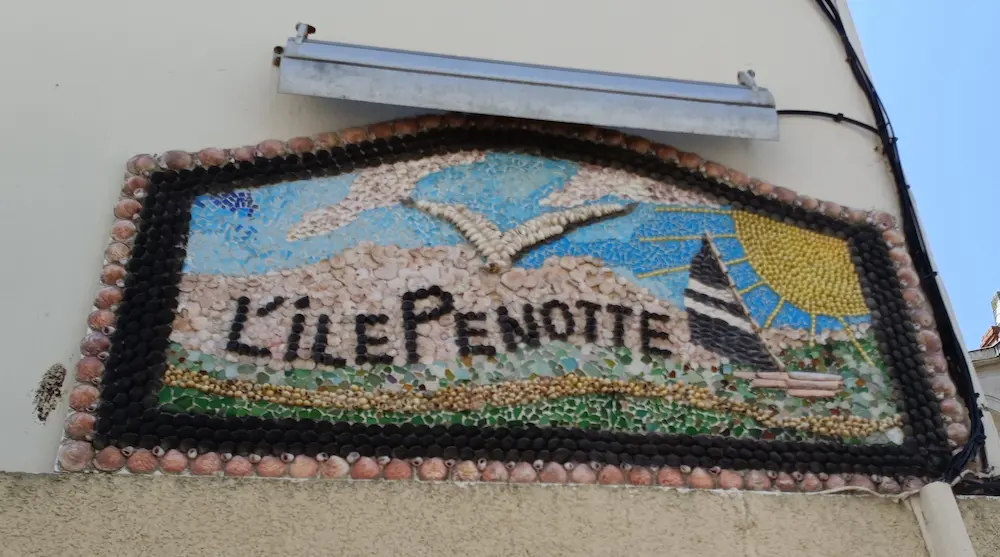J’ai beaucoup aimé la grande plage et l’esplanade, très vivante. En revanche, il y avait énormément de monde. Ce n’est évidemment pas une ville où l’on envisage de s’installer.
Le camping Le bois de la jachère indiquait se situer à quelques mètres de la plage. Il a quand-même fallu traverser un vaste bois et longer une route pour l’atteindre, mais nous avons pu observer le coucher de soleil sur l’océan. Splendide.
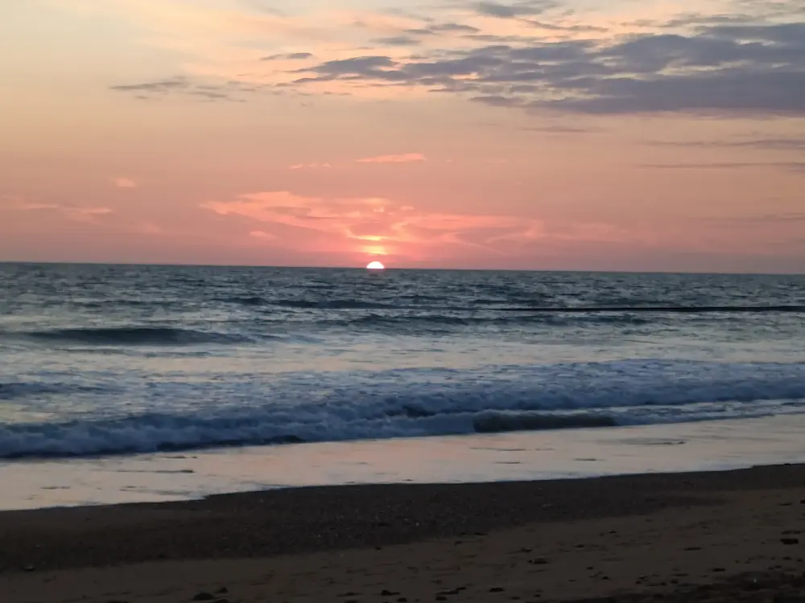Ce camping a été assez décevant. On nous a indiqué un emplacement où nous installer, et alors que nous étions parties en promenade, on nous a appelé pour nous demander de revenir bouger la tente, car il y avait eu erreur. Et comme on avait réservé juste pour une seule nuit, on devait se déplacer et laisser l’emplacement pour ceux qui avaient un van et une réservation d’une semaine ! Cela ne nous a pas plu du tout. Quelle gestion ! Nous avons dû insister pour ne pas bouger – tout était déjà installé dans la tente – et nous sommes passées pour des chieuses. Heureusement, nous avons passé de bons moments pour nous faire oublier cela.
Jours 3 et 4 : Vannes, en passant par Ploërmel
Le programme initial était de rejoindre Vannes en quittant Les Sables-d’Olonne. Quelques jours avant notre départ, Diatomée a découvert que la ville de Ploërmel pourrait éventuellement nous intéresser. Nous avons donc planifié un détour.
Ploërmel
Petite ville bien agencée, avec un centre historique organisé autour d’une belle église, de jolies ruelles, des commerces de proximité, une gestion de la circulation plutôt efficace et, a priori, un lac et des musées intéressants.
Une fois sur place, nous nous sommes rendues compte que la ville est plutôt morte et que le lac se situe très loin du centre ; beaucoup trop pour devenir une promenade quotidienne agréable. Ploërmel ne présente finalement pas grand intérêt.
Vannes
Depuis le Flower camping, l’accès au centre historique à pied est assez long. Il existe une voie verte le long du port, mais elle ne part pas du camping. La ligne de bus est payante.
Nous avons néanmoins fait le trajet plusieurs fois. La voie verte propose des transats en bois pour se reposer et des appareils de sport type vélo elliptique. Il y a même une supérette de proximité bien pratique. Très sympa.
Le centre-ville médiéval est agréable, vaste, avec beaucoup de boutiques et crêperies. C’est très vivant. En revanche, les remparts et autres bâtiments d’époque ont été dénaturés et transformés. La ville est surchargée de véhicules et plutôt sale et bruyante. D’ailleurs, elle est beaucoup trop énorme pour que nous puissions nous y sentir bien.
Nous avons eu la chance de pouvoir profiter du marché, immense et très fréquenté ! Malheureusement, la cathédrale était en travaux et le peu que nous pouvions en voir ne nous montrait rien. Juste devant, nous avons eu le plaisir de découvrir Raïdho Tribe qui a hypnotisé nos oreilles et nos cœurs en jouant du didgeridoo, du handpan et autres percussions, avec talent. Il était accompagné d’une violoncelliste envoûtante. Nous avons adoré ! Nous sommes restées si longtemps à les écouter que nous avons raté l’heure de déjeuner et sommes arrivées en retard devant la crêperie que nous convoitions. Plus de places disponibles ! Qu’à cela ne tienne, nous en avons trouvé une autre et avons pu déguster la galette complète bretonne, avec une bolée de cidre et une délicieuse crêpe en dessert. Parfait !
Nous avons également fait une balade autour de la presqu’île de Conleau. C’était épuisant !
Le camping n’avait rien de particulier. Si ce n’est que certaines douches fonctionnaient mal et que le ménage était fait – n’importe comment – aux heures de pointes ! Nous avons eu droit à nos premières fientes de goélands sur la voiture 🦤 (pas d’émoji de goéland disponible, sorry). Sympa.
Jours 5 et 7 : Quiberon, en passant par Plouharnel
Le passage par Plouharnel était obligatoire puisque cette ville est à l’entrée même de la presqu’île. Nous avons pris un moment pour l’explorer, au cas où.
Plouharnel
Ville sans aucun intérêt, si ce n’est Le jardin de Papy, un havre de verdure au milieu d’une gabegie de voitures et de la puanteur de la baie.
Quiberon
Quiberon nous a semblé être une ville très prometteuse. Déjà, il y a une promenade sur la côte qui permet de rejoindre un bout et l’autre de la ville avec facilité. Ensuite, tous les services (magasin, bibliothèque, cinéma) sont très proches de la mer. On peut y aller facilement à pied, sans que ça prenne des heures. Les plages sont sympas.
Il y a néanmoins quelques bémols :
- on voit les évacuations d’eaux pluviales sur les plages, ce qui n’est jamais bon signe quand les réseaux débordent…
- le port est extrêmement bruyant, il y a beaucoup de bateaux très polluants,
- pas de végétation dans la ville ?!? 🤔
- les services de bus et trains ne fonctionnent a priori pas hors saison (à vérifier),
- l’immobilier a des prix exorbitants 😱.
Ce fut cependant l’endroit où nous nous sentîmes le mieux depuis le début de ces vacances.
Le camping du Goviro était plutôt sympa. Accès à la plage juste à la sortie, impeccable. Tout aurait été parfait si l’aire de jeux des enfants n’avait pas été située juste à côté de notre emplacement. Les goélands chafouins venaient voler les poubelles aussi. Les brigands.
Jour 6 : Sauzon, sur Belle-Île

Pour rejoindre Belle-Île-en-Mer, il nous a fallu prendre le bateau au port Maria de Quiberon. Pour aller vers Sauzon, il s’agissait du moins gros, mais la pollution était déjà hallucinante 😵💫.
La ville de Sauzon en elle-même ne présente pas d’intérêt. Le port occupe la place centrale et ses utilisateurs ne sont clairement pas les personnes les plus respectueuses de l’environnement qui soient. Ceci dit, le tour de la Pointe des poulains était génialissime. Nous avons même pu nous baigner. L’île, de ce point de vue, avait des airs de paradis.
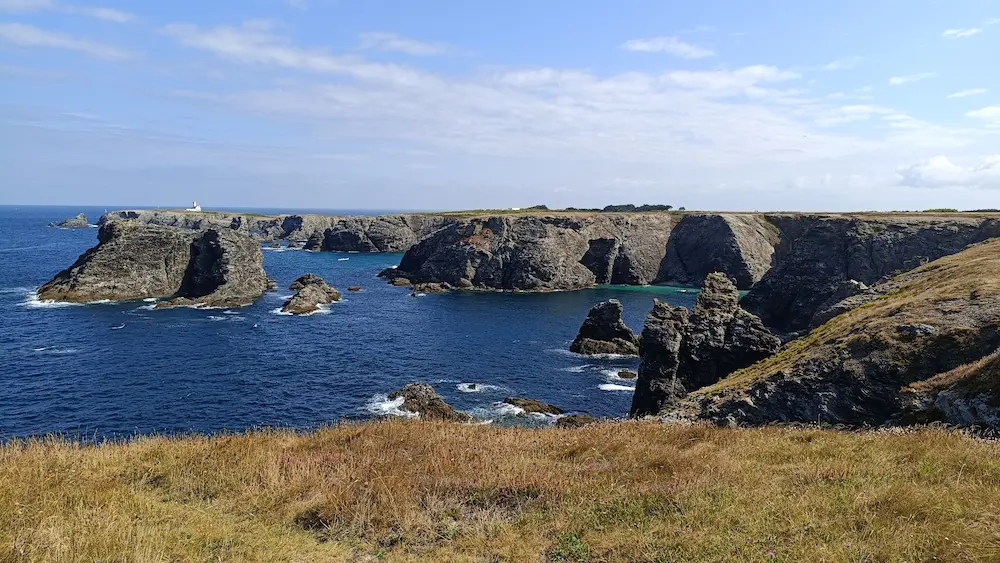 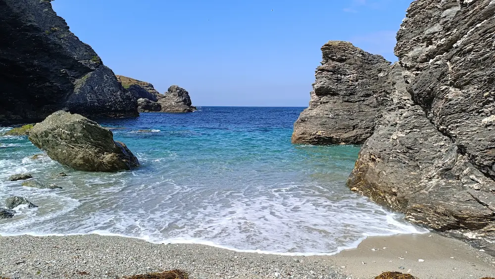 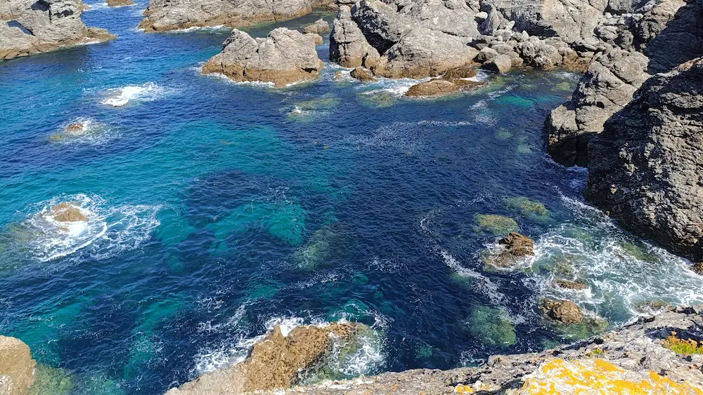 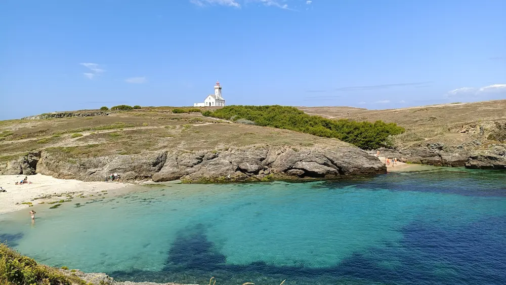 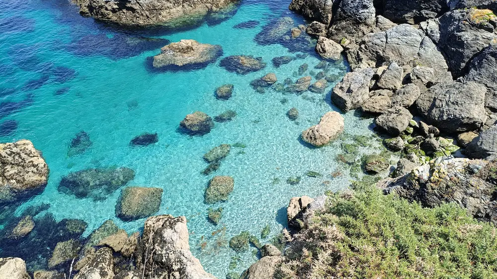 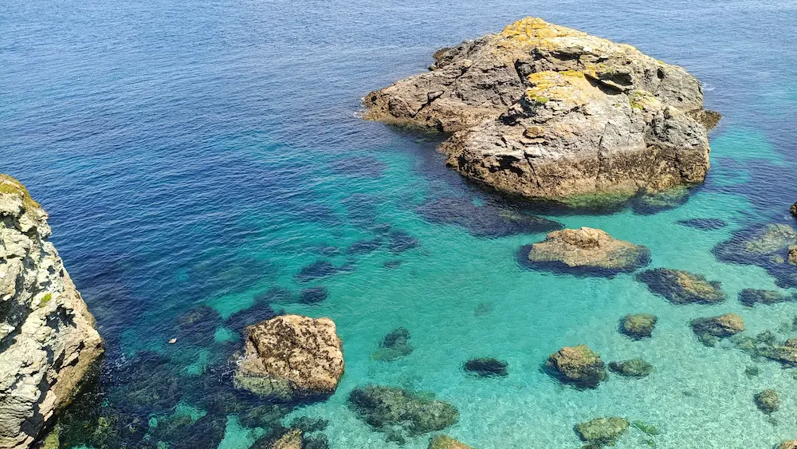Jour 8 : Concarneau, en passant par Quimperlé et Quimper
Quimperlé
Grosse déception pour cette ville. Il y a bien des monuments sympas, mais circuler à pied là-dedans est un véritable enfer. Nous avons pu trouver un petit coin sympa au bord de l’eau pour pique-niquer, en regardant les canards et les poissons. C’est le seul point positif.
Quimper
Ville énorme ! Nous avons pu nous garer un peu à l’écart et gagner le centre à pied. Il y a un jardin exotique sympathique, malheureusement embaumé d’une odeur d’égouts permanente. La ville est globalement sale et désagréable, bien que la cathédrale soit époustouflante et que certaines rues pavées alentours sont sympas. On sent néanmoins qu’il ne fait pas bon sortir le soir 😵💫.
Il faut quand-même noter que c’est à Quimper que nous avons découvert la Maison Georges Larnicol qui fait de magnifiques chocolats. Chaleur et camping obligent, nous n’avons pas pu en profiter. Nous avons tout de même goûté les Torchettes, excellents cookies énormes aux fruits secs et aux algues.
La cathédrale est une œuvre d’art à part entière.
Jour 9 : Ville close de Concarneau
Concarneau ne présente aucun intérêt : sale, bruyante, non adaptée aux piétons et vélos. Nous avons visité la Ville close, petite cité entourée de remparts. C’est surtout un circuit touristique bourré de boutiques. Depuis la rive où nous nous trouvions, il a fallu effectuer la traversée avec "le bac", petit bateau noir de fumée et pas très agréable. Il y a quand-même moyen de faire plus propre… Pour revenir dans l’autre sens, nous avons essayé à pied en contournant le port. Affreux😱.
Même les plages ne donnaient pas envie. On n’a pas osé se baigner !
Nous avons pu regarder le spectacle de jonglerie d’un pirate. Amusant, ça nous a fait une petite pause.
Le camping du Moulin d’Aurore présentait des avantages et des inconvénients. D’abord, il y avait une boulangerie juste à côté (nous n’en avons pas eu l’utilité, mais c’est un bon point). Ensuite, il y avait de l’ombre sur les emplacements et les « kits Vulcains » des sanitaires sont les meilleures configurations que nous avons vues. Malheureusement, il n’y avait pas assez de douches par rapport au nombre d’emplacements. La route devant le camping est beaucoup trop passante et bruyante. Les emplacements étaient alloués de manière un peu hasardeuse et non réfléchie. Et ce côté de la rive n’est pas le plus pratique pour visiter le coin.
Jour 10 : Douarnenez et Locronan
Douarnenez
Si la balade de Sauzon était le paradis, Douarnenez est sans aucun doute l’enfer. Là-bas, même la plage n’est pas mise en valeur. Nous avons perdu notre âme en utilisant les toilettes publiques ☠️. Aucun intérêt.
Locronan
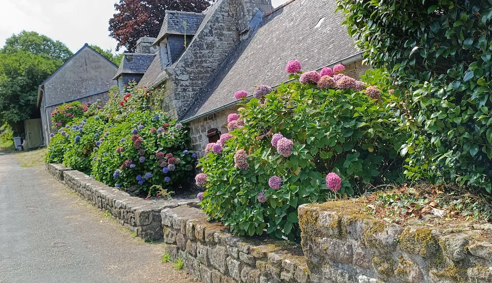Petit village médiéval qui porte le titre de « Cité de caractère », Locronan a du charme. C’est indéniable. Cependant, il est présenté comme une sorte de musée à ciel ouvert, rempli de boutiques. Il n’y a pas d’âme entre ses pavés et ses murs de pierres. Pour une balade de quelques heures, avec visite d’une église, ce qui est toujours appréciable, pas sûre que ça vaille le prix du stationnement.
Jour 11 : Huelgoat
Pour remonter dans Les côtes d’Armor, nous avons fait escale à Huelgoat, aux portes de la forêt de Brocéliande. Je m’attendais à une jolie ville, orientée autour de son lac, et à une belle balade dans une forêt empreinte de charme et de magie.
Résultat : le lac n’apporte aucune plus value (pêche, et c’est tout) et les chemins en forêt sont mal balisés, les points d’intérêts mis en évidence avec des panneaux inesthétiques et pas du tout dans l’ambiance mystique. Et il y avait beaucoup trop de monde. C’était un peu comme suivre une piste dans un parc d’attractions pour passer au manège suivant. Nous n’avons pas vraiment profité de certains lieux qui auraient pu être intéressants.
Le camping La rivière d’argent ne mérite pas ses étoiles et ne devrait pas coûter aussi cher. Absence totale de réseau de téléphone et de wifi. On nous a fourni un code de connexion, on se demande encore pourquoi ! En fait, il y avait le strict minimum dans ce camping et la seule présence d’une piscine ne suffit pas à faire gonfler les prix ainsi. D’ailleurs, la piscine était assez petite et, évidemment, il n’y avait pas assez de place pour tous les enfants qui s’y amusent en hurlant et les gens qui veulent juste se détendre dans l’eau. Les jeux proposés (jeux de société, ping pong, livres) étaient tous cassés, avec des pièces manquantes, etc. Et les sanitaires (assez similaires à ceux d’une piscine municipale) donnaient l’impression de sortir encore plus sales qu’à l’arrivée.
Jour 12 : Lannion en passant par Guingamp et Paimpol
Guingamp
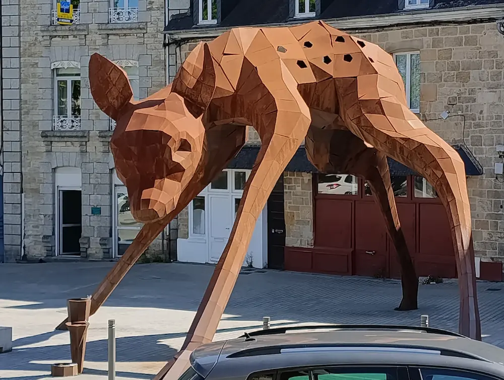Guingamp semble être une ville équilibrée, bien qu’on ait pu constater pas mal de saletés. Son plus gros point noir est qu’elle se situe loin de la mer.
Il y avait un côté médiéval sympa, avec les remparts, quelques œuvres d’art dignes d’intérêt dans les rues, un cinéma, un parc et un cours d’eau agréables pour la promenade. Mais tout cela n’est pas suffisant pour avoir envie de s’y installer.
Paimpol
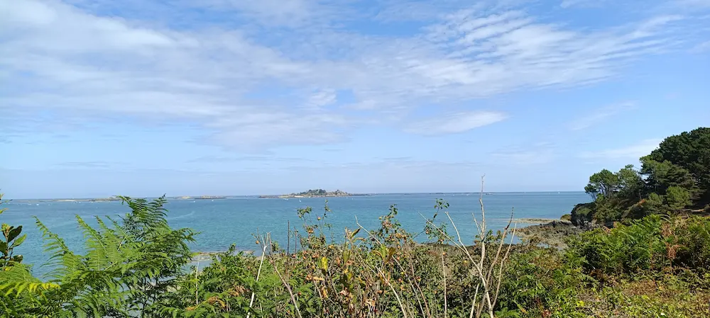C’est là que les choses commencent à devenir prometteuses. L’architecture de la ville est agréable, la vieille ville est très sympa, il y a la plage, des balades (sur la baie, certes, mais bon), un réseau de bus, le cinéma, la médiathèque. Le port est sans doute bruyant, mais il y a du potentiel ici.
Lannion
Lannion semble être une immense ville. Elle est cependant bien située pour aller se promener sur la côte de granit, il y a d’ailleurs un réseau de bus qui la relie aux principales stations balnéaires.
Le centre ville a du charme, il y a de beaux bâtiments. Malheureusement, l’église n’est pas ouverte aux visiteurs et ça, c’est inacceptable. On se serait cru aux abords de Westminster, à Londres : de magnifiques édifices dans lesquels on ne peut pas mettre un pied ! Les rues marchandes du centre sont agréables. Il y a néanmoins beaucoup de voitures qui circulent tout autour.
Le camping Les deux rives est plutôt bien situé, à l’une des sorties de la ville et à 15 minutes de marche du centre, par une route peu fréquentée et des petites rues. Cependant, de l’autre côté de la rivière, il y a la route d’entrée de la ville. Un enfer pour dormir. Au niveau des sanitaires, il n’y avait pas de prise dans les cabines de lavabos, ce qui est problématique pour le rasoir, charger la brosse à dents, etc. Quant à l’emplacement, il était labouré par des tracées de pneus. On a failli se casser une patte plus d’une fois.
Jour 13 : Trégastel et Perros-Guirec
Trégastel
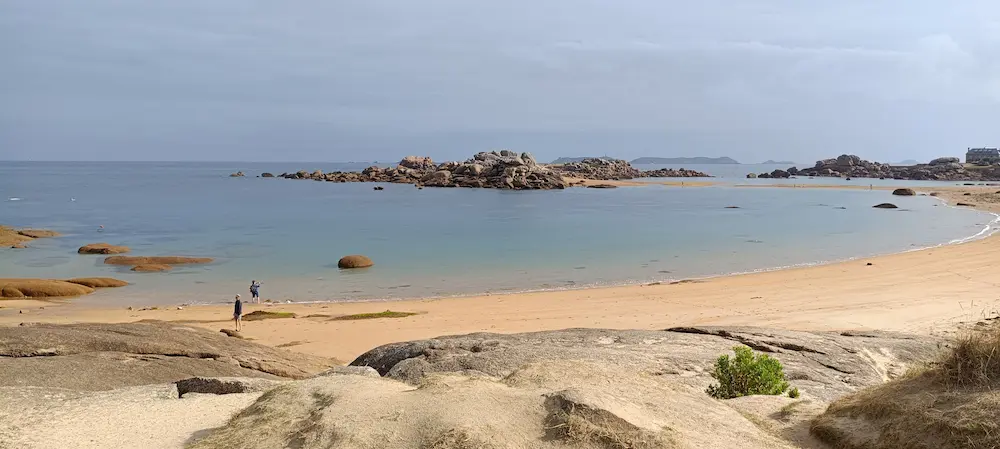Gros coup de cœur pour cette ville de bord de mer qui propose une balade le long de la côte. La ville dispose de boutiques, restaurants, une église toute mignonne, une ligne de bus qui la relie directement à Lannion.
Il faut vérifier si les services ne s’arrêtent pas hors saison. En tout cas, la plage était très agréable et découvrir les rochers de granit à marée basse était très amusant.
Perros-Guirec
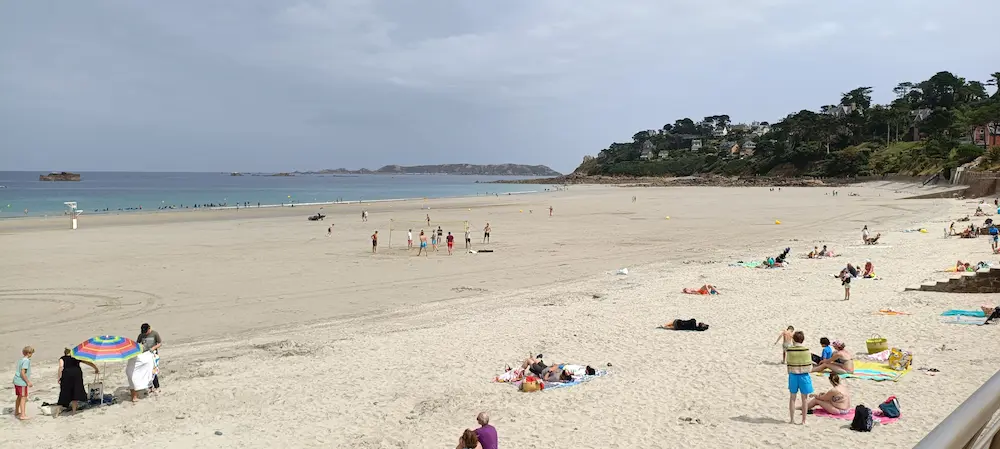Dans le même esprit que Trégastel, on a ici une plage sublime et des accès aux promenades un peu partout. La ville est bien plus vaste et mieux fournie en services (cinéma, magasin). Elle est aussi reliée par bus à Lannion, a priori, et une navette gratuite relie le parking extérieur à la plage l’été. Il faut voir ce qu’elle propose hors saison.
Niveau immobilier, les prix semblent être assez élevés de ce côté de la Bretagne également.
Jour 14 : Trébeurden
Niveau plage et promenade, on est clairement en haut du panier avec Trébeurden. Il y a aussi la ligne de bus qui relie la station à Lannion. C’est plutôt cool. Par contre, la ville est une horreur. Il n’y en a pas vraiment, en fait. Tout est tourné autour du port. C’est probablement mort l’hiver.
Jour 15 : Saint-Malo en passant par Lamballe-Armor et Dinan
Lamballe-Armor
Aucun intérêt.
Dinan
Ville assez vaste avec un énorme potentiel. Tous les services sont présents, le centre-ville historique est bien préservé et très joli, l’église Saint-Malo est magnifique (on dirait une cathédrale). Il y a un joli jardin public à deux pas du centre. Il faudrait explorer plus en profondeur.
Malheureusement, la mer est loin.
Saint-Malo
Que ce soit la cité d’Aleth, la ville ou Saint-Malo intra-muros, tout est moche, dénaturé, bruyant, puant. La plage de l’autre côté des remparts est agréable, mais c’est tout.
Le camping La cité d’Aleth était le pire que nous ayons jamais vu. Les emplacements sont ridicules, on se monte tous les uns sur les autres et pour une centaine d’emplacements (donc 200 personnes en moyenne), il n’y avait que 6 douches !!! Dont au moins une avec uniquement de l’eau froide (celle que j’ai pu avoir, évidemment).
Jour 16 : Le Mont-Saint-Michel et Loches
Le Mont-Saint-Michel
Un véritable attrape-nigauds ! Que c’est moche en fait. Le plus beau à voir est la vue d’ensemble depuis la passerelle de la baie, à la limite. Sur le mont, il n’y a rien d’autre que des boutiques hors de prix et des hôtels, les remparts sont mal entretenus et la basilique n’est pas accessible, sauf à payer encore plus cher. Eh oui, car pour moins de 3 heures sur place l’été, il faut se délester de la modique somme de 20 € pour laisser sa voiture à l’entrée de la baie. Une navette permet de rejoindre plus rapidement l’île, mais elle est bondée (à l’aller). Alors on peut marcher sur la passerelle, ce qui est tant mieux, car la meilleure vue est là !
Loches
Ville d’escale sur le chemin du retour à la maison, pour couper la route en deux. Il était censé y avoir un centre historique en ville haute avec remparts (une petite pensée pour Laon), mais ce n’était rien en fait. Une vaste blague, une fois de plus. Il y a vraiment des villes qui racontent n’importe quoi pour attirer du monde alors qu’elles ne font rien pour entretenir et préserver leur patrimoine culturel et historique. Si, il y avait un petit jardin public agréable. Sinon, pour un lundi, la ville était bien morte.
L’animation du coin, c’était la soirée danse au camping La citadelle, jusqu’à 22h30. Rien à dire sur ce camping si ce n’est qu’il était bien cher pour le strict minimum, encore une fois.
Conclusion
On aura passé de bonnes vacances, à découvrir toutes sortes de coin sympas (et moins sympas) de la Bretagne et alentour. Nous avons été bien fatiguées de nos balades, mais aussi de la foule, du comportement des gens dans les campings et de nous projeter pour l’avenir. Chercher si ces endroits étaient faits pour nous ajoutait une charge mentale assez lourde.
Nous nous sommes cependant bien amusées et avons conforté l’idée selon laquelle le bord de mer, c’est quand-même vraiment très cool. Ma sirène adore aller se baigner et j’adore voir les gamins refaire toute la topographie des plages avec leurs petites pelles et leurs seaux, tantôt pour construire un château, tantôt pour creuser un trou qui verra l’eau de la marée arriver par en-dessous.
Les meilleurs coins que nous avons repérés sont donc :
- Quiberon,
- Paimpol,
- Trégastel,
- Perros-Guirec,
- Éventuellement Dinan.
On a déjà une idée plus précise de l’avenir.